Hürrem Sultan
Temel güç · oyunda bir
Fısıltı. Hüküm'de Nüfuzu hangi Vekilin alacağını sen seçersin.
Lütuf · Hırs ile açılır
Çifte Oyun. Bu Tertip'te iki kart koy; açılışta duyur.
Gülüşüyle girdi, aklıyla kaldı.
Temel B yönü: krem kâğıt, varak altın, lacivert ve sülyen, kitap ciltlerinden kart sırtları. Dizi kareleri A'nın kırmızıdan altına renk işlemini taşır; gücü üstteki kaydırıcıyla ayarlanır (50–100, şimdilik %85). Kartlar yatay telefonda oynanacak boyutta gösterilir.
Bütün kart türleri aynı iskeleti kullanır. Ad ve metin ortalanır. Alt rozetler kalktı; sahiplenme ve sıklık artık metnin içinde, simgesiyle yazılıyor.
| Yuva | Karakter | Kul | Entrika | Kriz | Kader |
|---|---|---|---|---|---|
| 1 Madalyon | Karakter simgesi | Kul simgesi | Çözüm sırası | Kriz simgesi | Mühür, onaylı ya da kırık |
| 3 Simge | boş | Kılığın alanı | Harem / Divan | Açtığı alan | Sadakat / İhanet yolu |
| 4 Resim | Kadro portresi | Kadro portresi | Sahne ya da portre | Sahne | Sahne |
| 6 Metin | Temel güç ve Lütuf panelleri | Kılık ya da özel güç | Etki; gerekiyorsa «sahiplen» | Alan kuralı ve çekiliş | Yol ve Hüküm |
Kart 150 pikselden darsa yalnız madalyon, ad, alan simgesi ve resim kalır; eldeki kartlar böyle görünür.
Kişi gösteren her kartın portresi aynı kadrajda: göğüsten yukarı, ortada, gözler aynı hizada. Önce yapımcının ve kanalların poz verilmiş tanıtım fotoğrafları kullanıldı; bulunamayanlar için en uygun dizi karesi aynı kadraja kırpıldı.

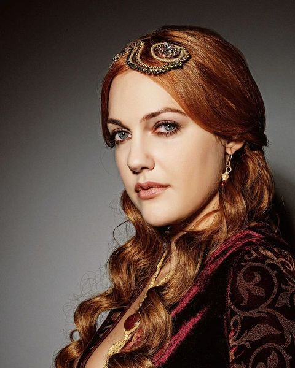


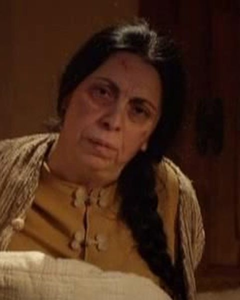


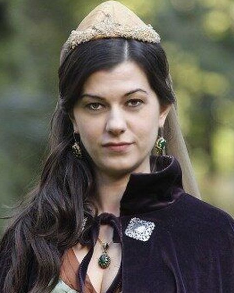
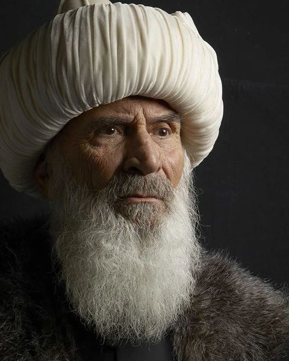


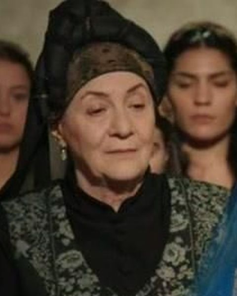


Karakterin iki gücü ayrı panellerde: Temel güç hazır, Lütuf Hırs tamamlanınca açılır. Kul kartı kendi türünü gösterir: lacivert «Kılık» bir Entrika kartını başka biri gibi oynatır, yeşil «Özel» kendi gücünü taşır.
Fısıltı. Hüküm'de Nüfuzu hangi Vekilin alacağını sen seçersin.
Çifte Oyun. Bu Tertip'te iki kart koy; açılışta duyur.
Gülüşüyle girdi, aklıyla kaldı.
Koyduğun bir Entrika kartını açılışta sahiplen ve Saray Dedikodusu olarak oyna.
Haremde ne olursa önce onun kulağına gelir.
Nüfuz kazandığında 1 Nüfuz daha kazan.
Sadrazamlığı bıraktı, sözünü bırakmadı.
Köşedeki sayı çözüm sırasıdır. Sağ üstte yalnız alan simgesi var; üzerine gelince adı çıkar.

Bu oyuncu 1 Nüfuz kaybeder.
Bir isim, bir fısıltı, bir düşüş.
Bir Vekile koy. Onu uygun bir oyuncuyla değiştir; kendini de seçebilirsin. Açılışta sahiplen.
Sarayda son sözü Valide söyler.
Kriz kartı o Tertip'te hangi alanın açık olduğunu ve kimin kart çekeceğini söyler.

Bu Tertip'te yalnız Divan kartları oynanır.
Kazanlar kalktı; Ocak hesap soruyor.
Ön yüzde mühür ya onaylı ya kırık. Sırt iki türde de aynı.

Sadakat yoluna konur.
Hüküm: Süleyman bir Vekile 1 Nüfuz verir.
Devlete hizmet, Padişaha sadakat.

İhanet yoluna konur.
Hüküm: Süleyman bir Vekilden 1 Nüfuz alır.
«Sultanım, yemin ederim size yardım etmek istedim, fakat yapamadım!»
Tek çizgi stili: 24 birimlik ızgara, 1,6 kalınlık, yuvarlak uçlar. Renk yalnız anlam taşıyanlarda: alanlar, taraflar, Nüfuz.
Örnek: Herhangi bir Entrika kartını Saray Dedikodusu olarak oyna. Hüküm'de Süleyman bir Vekile 1 Nüfuz verir. İtiraz etmek 1 Nüfuz tutar.
Tek bir işleyici, art/terms.json tablosunu okuyup kart metnindeki her terimin önüne simgesini koyar. Kök kelimenin başında aranır, sonundaki ekler kelimeye bağlı kalır.
| Simge | Kimlik | Kökler |
|---|---|---|
| term.suleyman | Süleyman · Padişah | |
| term.death | Süleyman'ın ölümü | |
| term.loyalist | Sadık · Sadığ | |
| term.traitor | Hain | |
| term.allegiance | Taraf | |
| term.min1 | Birinci Vekil | |
| term.min2 | İkinci Vekil | |
| term.minister | Vekil | |
| term.character | Karakter | |
| term.companion | Kul | |
| term.crisis | Kriz | |
| term.court | Tertip | |
| term.objection | İtiraz | |
| term.decree | Hüküm · Hükm | |
| term.kader | Kader | |
| term.hizmet | Hizmet | |
| term.hiyanet | Hıyanet | |
| term.intrigue | Entrika | |
| term.bosmektup | Boş Mektup · Boş Mektub | |
| term.ambition | Hırs | |
| term.harem | Harem | |
| term.divan | Divan | |
| term.saray | Saray | |
| term.influence | Nüfuz | |
| term.base | Temel güç | |
| term.favor | Lütuf · Lütf | |
| term.loyalty | Sadakat | |
| term.treason | İhanet | |
| term.claim | Sahiplen · sahiplen | |
| term.anon | İsimsiz · isimsiz | |
| term.secret | Gizli · gizli | |
| term.once | Oyunda bir · oyunda bir | |
| term.percrisis | Krizde bir · krizde bir | |
| term.always | Her zaman · her zaman | |
| card.akil-hocasi | Akıl Hocası | |
| card.muhur | Mühür | |
| card.valide | Valide'nin Buyruğu | |
| card.divan-sirasi | Divan Sırası | |
| card.saray-dedikodusu | Saray Dedikodusu | |
| card.muhurlu-evrak | Mühürlü Evrak | |
| card.saray-tabibi | Saray Tabibi | |
| card.iftira | İftira | |
| card.gozde | Gözde'nin Hediyesi | |
| card.teftis | Teftiş |
Oyun yatay tutulan telefonda oynanır (852 × 393). Ayrıntı kartı ekran yüksekliğine sığar; masadaki ve eldeki kartlar yalnız ad ve resim gösterir.
Bir Vekile koy. Onu uygun bir oyuncuyla değiştir; kendini de seçebilirsin. Açılışta sahiplen.
Sarayda son sözü Valide söyler.
Bu oyuncu 1 Nüfuz kaybeder.
Bir isim, bir fısıltı, bir düşüş.

Koyduğun bir Entrika kartını açılışta sahiplen ve Saray Dedikodusu olarak oyna.
Haremde ne olursa önce onun kulağına gelir.
Bu Tertip'te yalnız Divan kartları oynanır.
Kazanlar kalktı; Ocak hesap soruyor.
«Saray uyansın» ile beş kart aynı anda döner. Boş Mektuplar da açılır ve hiçbir şey yapmaz.
Bu oyuncu 1 Nüfuz kaybeder.
Bir isim, bir fısıltı, bir düşüş.
Bir Vekile koy. Onu uygun bir oyuncuyla değiştir; kendini de seçebilirsin. Açılışta sahiplen.
Sarayda son sözü Valide söyler.

Bu oyuncu bu kriz Nüfuz kaybetmez.
Toplanan bütün kareler, işlenmemiş halleriyle; ilk aday seçili olandır. Dosyalar art/stills/, kadro portreleri art/stills/roster/, kaynaklar ve notlar manifest.json içinde.
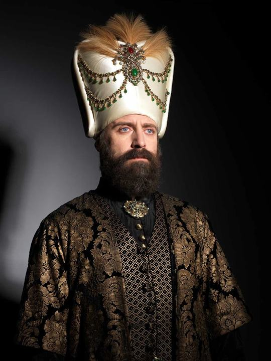


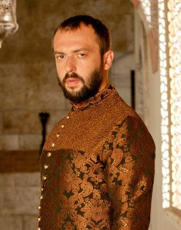

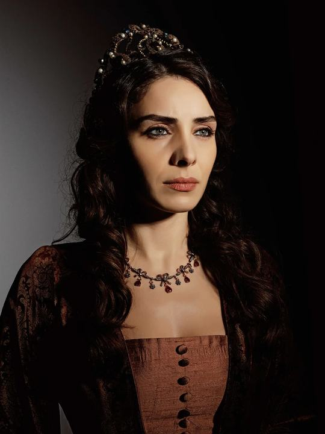
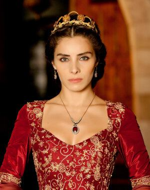


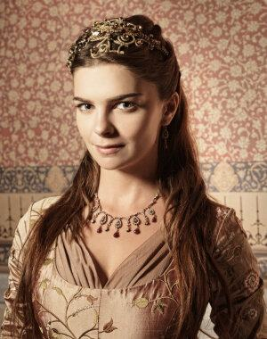
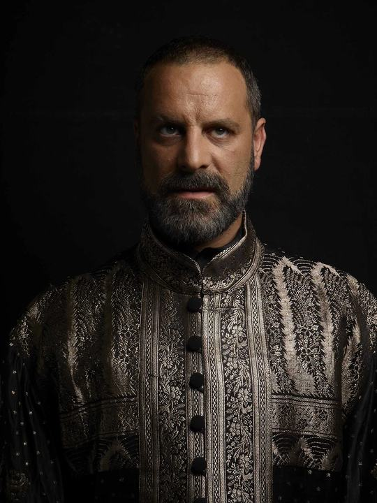
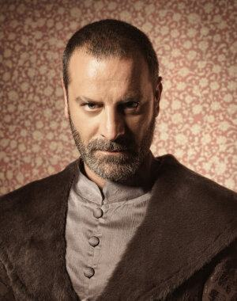


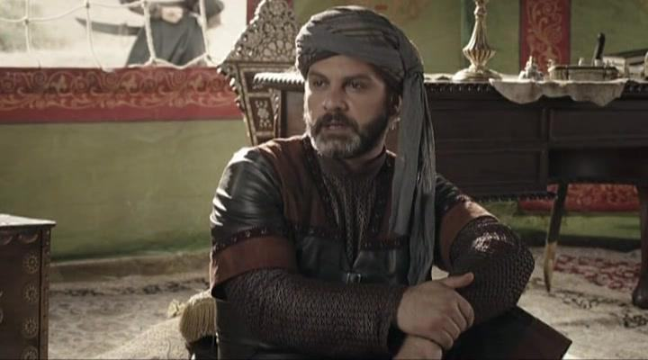


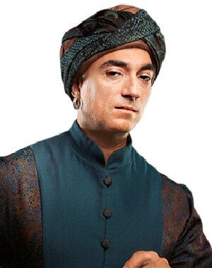


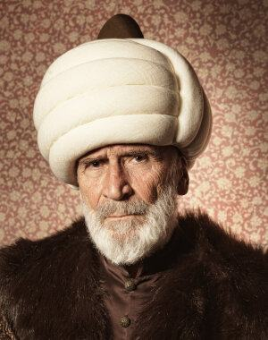

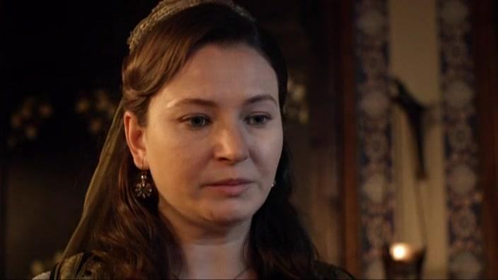


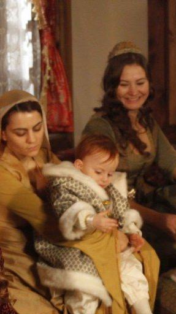


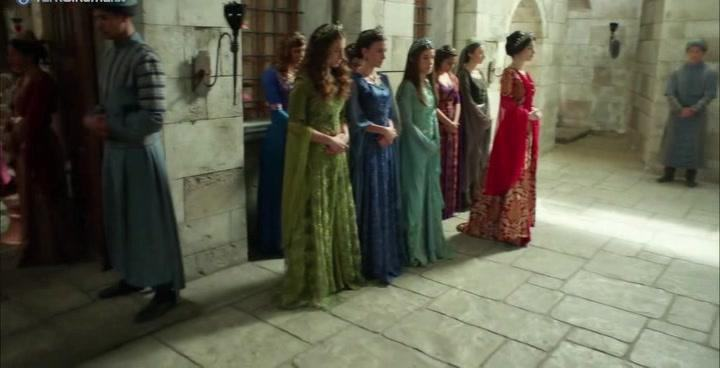

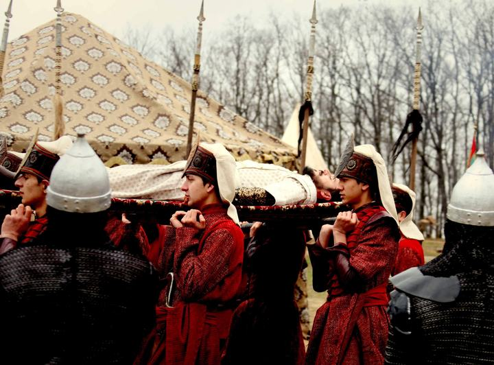
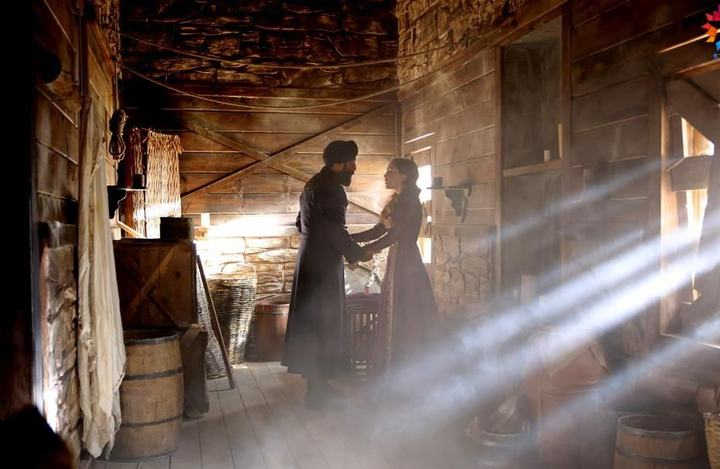
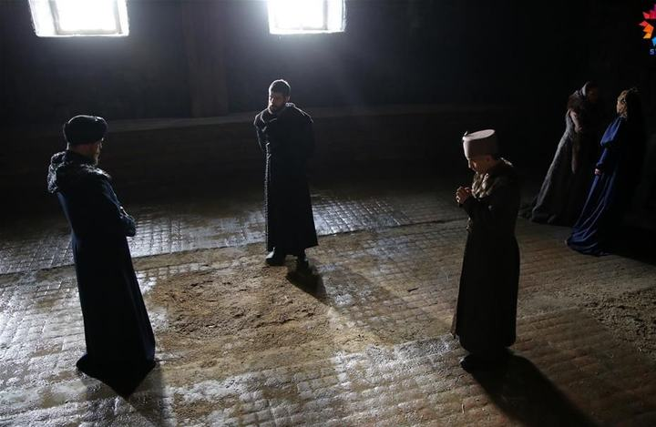
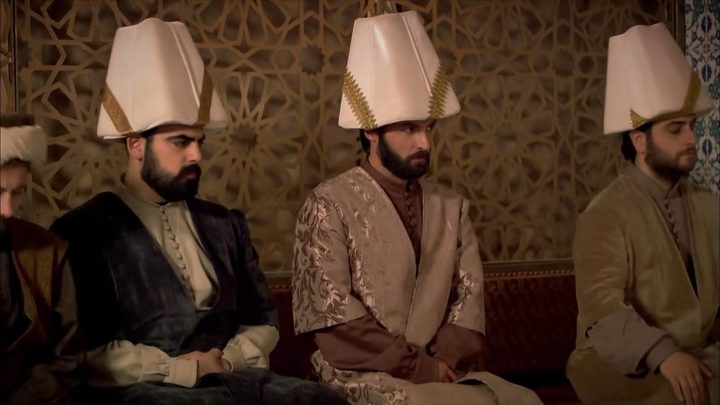

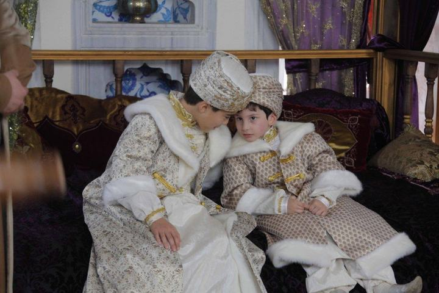


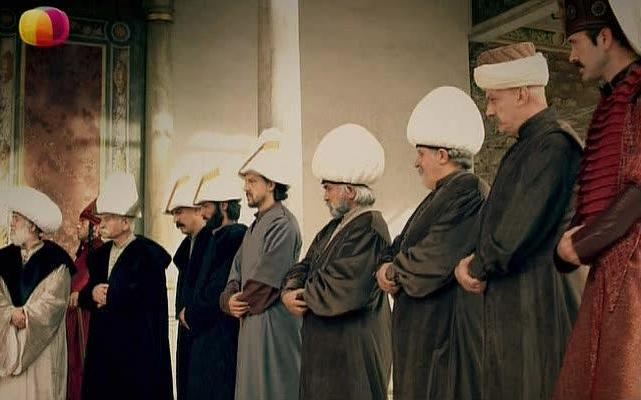

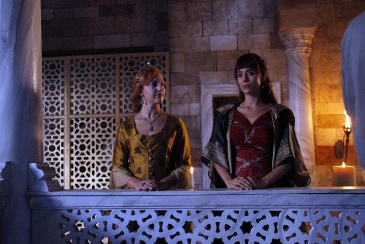


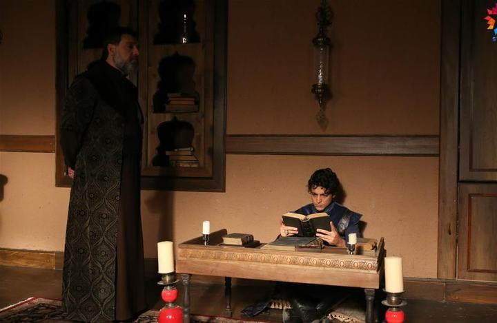


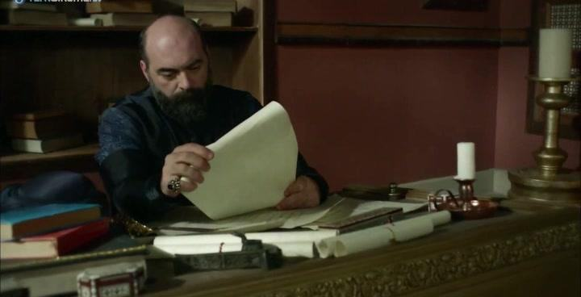


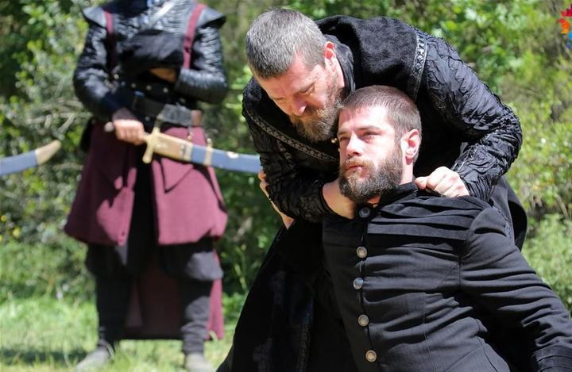

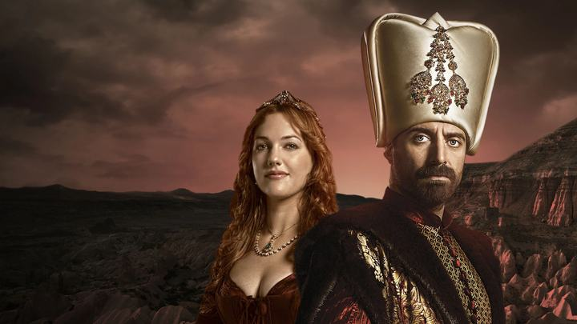